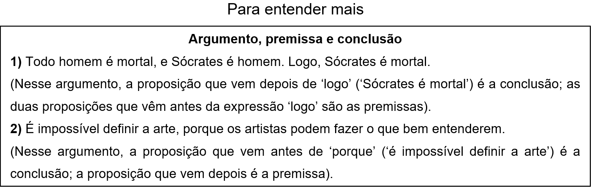

CAPÍTULO 3: LÓGICA E ARGUMENTAÇÃO E O CONTEXTO DA INDUSTRIA CALÇADISTA
Procurando por João, mestre de obras na construção de um edifício, o engenheiro Carlos encontra dois pedreiros, Antônio e Sílvio:
Carlos – Antônio, você viu o João por aí?
Antônio – Não. Mas, a essa hora, ou ele está no segundo andar ou ele já está fazendo a alvenaria do sétimo.
Carlos – Sílvio, você viu o João?
Sílvio – Não. Mas a alvenaria do sétimo andar ele não está fazendo, porque a argamassa não está pronta.
Onde está João?
Lógica, Justificação e Inferência
A operação mental que o engenheiro Carlos precisa realizar para descobrir onde João está é uma inferência: um raciocínio em que partimos de uma ou mais informações que nos são dadas para extrairmos, através do pensamento, uma conclusão que não nos foi apresentada. Ninguém disse a Carlos onde João está, e não sabemos se o que Antônio e Sílvio disseram para Carlos é verdadeiro. Mas sabemos que se o que Antônio disse é verdadeiro e se o que Sílvio disse é verdadeiro, então é verdadeiro que João está no segundo andar do edifício.
A diferença entre inferência e justificação, como vimos no primeiro capítulo, é apenas uma diferença de direção, de ponto de partida: na justificação, partimos de uma proposição, e vamos em busca de proposições que deem sustentação a ela; em uma inferência, partimos de proposições que nos são dadas e vamos em busca de uma conclusão que possa ser sustentada por aquelas proposições. Em ambos os casos, terminamos nosso percurso com um argumento, composto por premissas e conclusões. Mas o que é uma proposição, um argumento, uma premissa e uma conclusão? E o que caracteriza um bom argumento? O objetivo deste capítulo é introduzir você a essas e outras noções básicas da lógica e da argumentação.
Noções básicas de Lógica e de Argumentação:
A linguagem se presta a vários fins. Por meio dela, podemos, por exemplo, fazer perguntas, expressar estados de espírito e também dar ordens. Mas há uma função específica da linguagem de que todos fazemos uso e que constitui essencialmente os discursos científico e, assim pretende a maioria dos filósofos, filosófico: é o seu uso descritivo ou informativo, e o elemento próprio desse uso é aquilo que a tradição batizou com o termo “proposição”. Por meio de uma proposição (como “o livro está sobre a mesa”), procuramos dizer como as coisas são. Se dizemos que as coisas são de uma determinada maneira (que o livro está sobre a mesa), e as coisas são como nós dizemos que elas são (o livro, de fato, está sobre a mesa), então o que dizemos a respeito delas é verdadeiro: nossa proposição é verdadeira. Por outro lado, se dizemos que as coisas são de uma determinada maneira e as coisas não são como nós dizemos que elas são (o livro não está sobre a mesa), então o que dizemos a respeito delas é falso: nossa proposição é falsa. “Ser verdadeiro” e “ser falso” são, portanto, propriedades de um domínio específico da linguagem: o domínio da descrição do mundo. Perguntas, exclamações ou ordens não são, por si mesmas, verdadeiras ou falsas. Apenas proposições o são. Uma proposição é, portanto, aquilo que é verdadeiro ou falso.
Uma proposição, portanto, é verdadeira quando as coisas são como ela diz que são, e falsa quando as coisas não são como ela diz que são. Nessa caracterização da noção de proposição, estamos nos valendo da definição de verdade apresentada por Aristóteles (384 a.C.-322 a.C.), que é a concepção clássica e de senso comum de verdade: dizer a verdade é dizer que o que é é, e que o que não é não é. Essa concepção ficou conhecida como concepção de verdade como correspondência, porque sustenta que a verdade consiste na correspondência entre o mundo e o que dizemos sobre o mundo – a falsidade, portanto, consiste na ausência dessa correspondência entre o mundo e o que dizemos sobre o mundo; segundo a definição de Aristóteles, dizer algo falso é dizer que o que é não é, ou que o que não é é.
Usualmente, se distingue a noção de proposição da noção de sentença declarativa da seguinte forma: uma proposição é aquilo que uma sentença declarativa, que é algo escrito ou dito, significa. Essa distinção é feita, e ela é legítima, para dar conta do seguinte fato: as sentenças ‘João ama Maria’ e ‘Maria é amada por João’ são construções diferentes de palavras, de símbolos, mas aquilo que elas dizem é exatamente a mesma coisa; da mesma forma, quando eu digo ‘Chove’, eu estou dizendo a mesma coisa que diriam, se estivessem em meu lugar, um inglês que dissesse ‘It is raining’, um francês que dissesse ‘Il pleut’ ou um alemão que dissesse ‘Es regnet’ – o que essas diferentes construções de palavras dizem é a mesma coisa. Por isso, diz-se que elas são diferentes sentenças declarativas que expressam a mesma proposição. Uma sentença declarativa é, portanto, algo concreto, que pode ser visto ou ouvido. Uma proposição é uma entidade abstrata, isto é, algo que não ocupa uma posição no espaço e no tempo. Mas, ao longo desse livro, por uma questão de simplicidade, salvo em possíveis e raras exceções, nós vamos tratar ‘sentença declarativa’ e ‘proposição’ como sinônimos.
Agora que você entendeu o que é uma proposição, você pode bem compreender a definição de argumento: um argumento é um conjunto de proposições em que se pretende justificar ou inferir uma delas, a conclusão, com base em outras (ou outra) que são apresentadas como verdadeiras, as premissas.

Toda língua possui indicadores de premissa e de conclusão: expressões que são utilizadas para indicar que aquilo que se segue a elas deve ser tomado como premissa de um argumento ou como conclusão de um argumento. Na língua portuguesa, expressões como ‘logo’, ‘portanto’, ‘dessa forma’, ‘consequentemente’, ‘segue-se que’, etc. servem para introduzir a conclusão de um argumento. Expressões como ‘porque’, ‘pois’, ‘já que’, ‘dado que’, etc. servem para introduzir a(s) premissa(s) de um argumento. No entanto, nem toda ocorrência dessas expressões deve ser tomada como a ocorrência de um indicador de premissa ou de conclusão. Por exemplo, em ‘os malandros estão à solta. Portanto, tomem cuidado!’, a expressão ‘portanto’ não deve ser tomada como indicador de conclusão, dado que “tomem cuidado!” é uma ordem, e, portanto, não pode ser verdadeira ou falsa, e, portanto, não é uma proposição – e um argumento é um conjunto de proposições. Da mesma forma, em ‘o professor chegou e logo saiu’, a expressão ‘logo’ não deve ser tomada como indicador de conclusão, dado que, nesse caso, ela é um sinônimo de ‘em pouco tempo’, e não um sinônimo de ‘portanto’. Por outro lado, não é necessário que indicadores de premissa e de conclusão estejam presentes para que tenhamos um argumento. Outras convenções da nossa língua ou até mesmo uma relação evidente entre os conteúdos de proposições contidas em um trecho de discurso podem deixar claro que estamos diante de um argumento. Por exemplo: ‘só mesmo um louco para pensar que Maradona foi melhor do que Pelé. Pelé fez mais de mil gols e ganhou três copas do mundo. Maradona não fez nada disso, e ainda abusou das drogas’. Nesse trecho, embora não tenhamos nenhum indicador de premissa e de conclusão, temos um argumento – e, portanto, temos uma conclusão e premissa(s). Você saberia identifica-las?
Há um tipo de proposição que às vezes é confundido com um argumento. Trata-se do chamado ‘condicional’, ou ‘proposição condicional’. Condicionais são da forma ‘Se tal e tal coisa é verdadeira, então tal e tal outra coisa é verdadeira’. No entanto, condicionais e argumentos são coisas bastante diferentes. Tome o seguinte exemplo de condicional: ‘se a guerra foi declarada, haverá pânico na bolsa de valores’. Agora tome o seguinte argumento, formado a partir das mesmas proposições que compõem aquele condicional: ‘A guerra foi declarada. Logo, haverá pânico na bolsa de valores’. A diferença óbvia entre esses dois casos é que, no primeiro, as proposições não são apresentadas como verdadeiras, enquanto no segundo caso elas o são. Um condicional pode, é claro, aparecer como premissa ou conclusão de um argumento, mas ele nunca é, ele próprio, um argumento.
Um bom argumento, se deve nos apresentar boas razões para crer em algo, isto é, para tomarmos uma proposição como verdadeira, deve conter premissas verdadeiras. Entretanto, como vimos no final do capítulo 1, não basta que as premissas e a conclusão de um argumento sejam verdadeiras para que o argumento seja bom. Um exemplo disso é o argumento que vimos: nenhum planeta gira ao redor da Terra; Marte não gira ao redor da Terra; logo, Marte é um planeta. Do fato de as premissas serem verdadeiras não se segue que a conclusão tem de ser verdadeira, por isso, as premissas não fornecem uma boa justificação para a crença de que Marte é um planeta. Para que tenhamos um bom argumento, portanto, é preciso que as premissas se relacionem de tal maneira com a conclusão que essa relação torne impossível, ou ao menos improvável, que as premissas sejam verdadeiras e a conclusão seja falsa. Chamamos um argumento que satisfaz essas condições de ‘válido’. Portanto, um argumento é válido quando é impossível, ou improvável, que suas premissas sejam verdadeiras e sua conclusão seja falsa. Assim, a validade é uma relação entre o valor de verdade das premissas e o valor de verdade da conclusão.
A validade divide-se em dedutiva e indutiva. Um argumento é dedutivamente válido quando é impossível que suas premissas sejam verdadeiras e sua conclusão seja falsa. Um argumento é indutivamente válido quando é possível, mas improvável, que suas premissas sejam verdadeiras e sua conclusão seja falsa. A validade dedutiva divide-se, ainda, em formal e informal. Um argumento dedutivo é formalmente válido se a verdade das premissas exclui a possibilidade de a conclusão ser falsa única e exclusivamente em função de sua forma lógica. Mas o que é forma lógica? Para compreendermos esse conceito, analisemos o seguinte argumento dedutivamente válido:
Todo homem é mortal.
Sócrates é homem.
Logo, Sócrates é mortal.
O ponto é que não importa, para a validade do argumento, o conteúdo particular das proposições que o constituem – que elas falem de Sócrates, de ser homem ou de ser mortal. Ou seja, se nós substituirmos essas proposições por quaisquer outras, nós seguiremos tendo um argumento válido. Isso porque o que responde pela validade do argumento é aquilo que os lógicos chamam de ‘forma lógica’. No caso do argumento em questão, sua forma lógica pode ser representada da seguinte maneira – onde A e B são variáveis que representam quaisquer conceitos (e não apenas ser homem e ser mortal) e S representa qualquer indivíduo (e não apenas Sócrates):
Todo A é B.
S é A.
Logo S é B.
Já um exemplo, bastante trivial, de argumento dedutivamente válido, porém não em função de sua forma, é o seguinte: A grama é verde. Logo, a grama não é azul. Outro exemplo: Gustavo Kuerten tem 1,91 metros de altura. Logo, Gustavo Kuerten não tem 1,78 metros de altura. Esses argumentos são válidos em função do conteúdo das premissas, e não em função de sua forma: se a grama é verde, então é impossível que ela seja azul. Se Gustavo Kuerten tem 1,91 metros de altura, então é impossível que ele tenha 1,78 metros de altura.
Dois exemplos de argumento indutivamente válido são: (1) Todos os corvos observados até hoje são negros. Logo, todos os corvos são negros. (2) Todos os sapatos de número 42 que eu calcei até hoje me serviram. Logo, estes sapatos, que são de número 42, me servirão também. Nesses dois exemplos, é improvável que a premissa seja verdadeira e que a conclusão seja falsa (ATENÇÃO: é improvável que essas duas coisas ocorram ao mesmo tempo: a premissa ser verdadeira e a conclusão ser falsa); contudo, não é impossível. Isso significa que o argumento é não dedutivamente, ou indutivamente, válido.
Ação e reflexão
1) Assinale apenas os trechos que contêm proposições:
( ) Isabela tirou dez na prova de trigonometria.
( ) Obama.
( ) Barack Obama nasceu no Rio de Janeiro.
( ) O mestre de Platão.
( ) Você pode me passar a manteiga?
( ) Vai já pra cama!
( ) Verdes mares bravios de minha terra natal!
( ) x + 1 = 2
( )1 + 1 = 2
2) Para cada um dos trechos abaixo, identifique se ele contém um argumento; caso se trate de um argumento, identifique o que conta como premissa(s) e o que conta como conclusão. Nenhum trecho contém mais de um argumento.
a) “Em uma democracia, o pobre tem mais poder do que o rico, porque há mais dos primeiros, e a vontade da maioria é suprema”. (Aristóteles, Política.)
b) “Dado que a felicidade consiste na paz de espírito, e dado que a paz de espírito permanente depende da confiança que tenhamos no futuro, e dado que essa confiança se baseia no conhecimento que devemos ter sobre a natureza de Deus e da alma, segue-se que o conhecimento é necessário para a verdadeira felicidade” (Gottfried Leibniz, Prefácio à ciência moral).
c) “Deve haver substâncias simples, porque há compostos, e um composto não é senão um agregado de substâncias simples” (Leibniz, Monadologia).
d) “A Nasa anunciou que vai enviar quatro astronautas à Lua dentro de 13 anos, a bordo de uma cápsula que seguirá para o satélite da Terra numa nova nave espacial. Uma semana deverá ser a duração da missão dos quatro astronautas que a agência espacial norte-americana vai enviar à Lua em 2018. A viagem, segundo o administrador da Nasa Michael Griffin, durará quatro vezes mais do que as missões de Apollo à Lua entre 1969 e 1972”. (Visão, 20 de setembro de 2005)
3) Leia as páginas 37-53 do livro Arte de Pensar 10º ano, vol. 1 (http://dmurcho.com/docs/arte10a.pdf) e faça os exercícios das páginas 38-39, 44, 46, 48, 49, 52 e 53.
O que aprendi
Neste capítulo você aprendeu as noções básicas que compõem o raciocínio lógico. Vimos que operação mental que estrutura esse tipo de operação é uma inferência: um raciocínio em que partimos de uma ou mais informações que nos são dadas para extrairmos, através do pensamento, uma conclusão que não nos foi apresentada.
Aprendemos que por meio de uma proposição (como “o livro está sobre a mesa”), procuramos dizer como as coisas são. Se dizemos que as coisas são de uma determinada maneira (que o livro está sobre a mesa), e as coisas são como nós dizemos que elas são (o livro, de fato, está sobre a mesa), então o que dizemos a respeito delas é verdadeiro: nossa proposição é verdadeira. Por outro lado, se dizemos que as coisas são de uma determinada maneira e as coisas não são como nós dizemos que elas são (o livro não está sobre a mesa), então o que dizemos a respeito delas é falso: nossa proposição é falsa.
A próxima noção fundamental a ser compreendida para entender o pensamento lógico é a noção de argumento. Um argumento é um conjunto de proposições em que se pretende justificar ou inferir uma delas, a conclusão, com base em outras (ou outra) que são apresentadas como verdadeiras, as premissas.
Chamamos um argumento de válido quando é impossível, ou improvável, que suas premissas sejam verdadeiras e sua conclusão seja falsa.
Para aprender um pouco mais sobre alguns dos temas deste capítulo, assista ao vídeo ao lado, do canal Crash Course Philosophy, intitulado “Raciocínio filosófico: como argumentar” (lembre-se de ativar as legendas).
Agora que você domina as noções básicas da argumentação, pode compreender que aprofundando no conhecimento da lógica e da arte do raciocínio você desenvolverá competências que podem diferenciá-lo no mercado de trabalho.
Na indústria calçadista, por exemplo, você deve ser capaz de acompanhar fluxogramas que descrevem determinados processos da indústria. Essa interpretação exige competências típicas do raciocínio lógico-matemático, como fazer inferências. A lógica está na base da computação. Então, se você precisa programar ou trabalhar com automação, algo que se tornará cada vez mais comum na indústria calçadista, precisará desenvolver suas capacidades de raciocínio lógico.